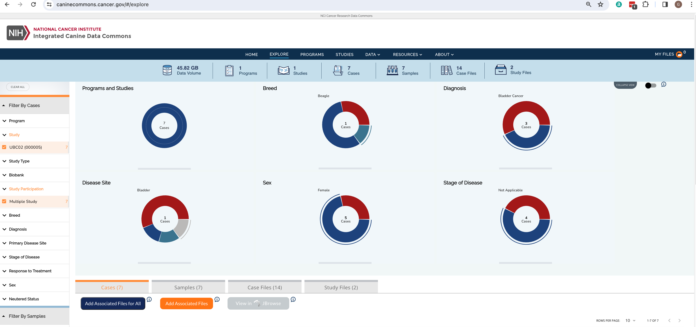
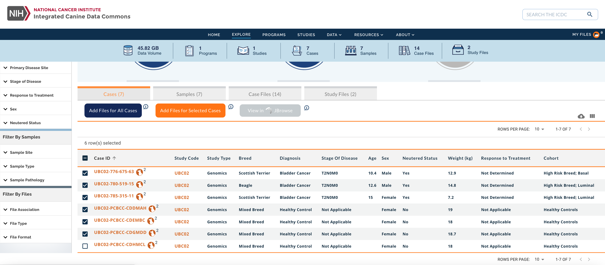

Building a Cohort within the ICDC
The Integrated Canine Data Commons is a cloud-based repository of spontaneously-arising canine cancer data from pet dogs established to further research on human cancers by enabling comparative analysis with canine cancer. All files available through the ICDC are open-access and can be exported into the CGC by any user. For this tutorial, we will conduct an example RNA-Seq analysis using 6 Binary Alignment Mapping files derived from 6 canine individuals enrolled in the UBC02 study. 3 files are from tumor tissues sequenced from diseased individuals and 3 files are from normal tissues sequenced from healthy individuals.
Step 1: Filter cases using faceted search
- Navigate to the ICDC Explore Dashboard
- Expand the Study facet and select UBC02
- Expand the Study Participation facet and select Multiple Study

Step 2: Add files to the Cart
- From within the Dashboard table select 3 healthy controls and 3 diseased canines
- Click on the button
- Click on the My Files icon in the top right of the navigation bar 
Step 3: Export files to the Cancer Genomics Cloud
- Check to make sure there are 12 files in the cart
- Expand the dropdown menu of the button
- Click on
- Follow the prompt to login to the CGC or create an account if one does not yet exist
- Select a from the dropdown menu or create a new project
- Select the checkbox to agree to the CGC terms
- Click on the button